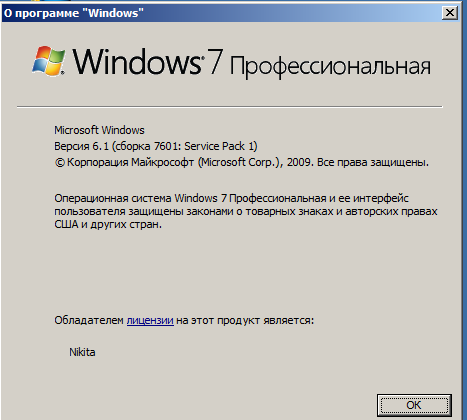
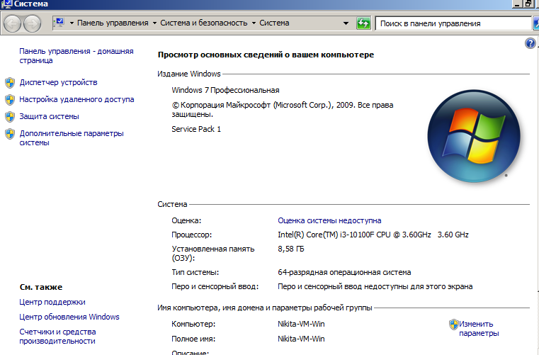

10.07.2024, 22:00
Здравствуйте! В этой статье мы будем учиться узнавать вашу версию Windows!
Windows как и любая другая ОС, приложение или игра разделяется на версии. Самая версия Windows была Windows 1.0, а последняя на момент написания статьи - Windows 11. В этой статье мы будет узнавать версию Windows!
Чтобы узнать версию Windows данным методом, нажмите WIN + R на клавиатуре и введите в открывшимся окне "winver" и нажмите OK. Вверху будет логотип вашей версии Windows, в том числе и версия Windows.
Чтобы узнать версию Windows данным методом, на рабочем столе найдите значок "Компьютер" или "Этот компьютер". Нажмите правой кнопкой мыши по этому значку и выберите "Свойства". Тут вы можете найти вашу версию Windows.
Следите за нашим сайтом, чтобы не пропускать новые инструкции для вас!